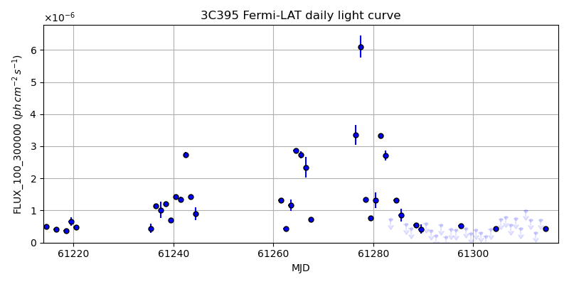
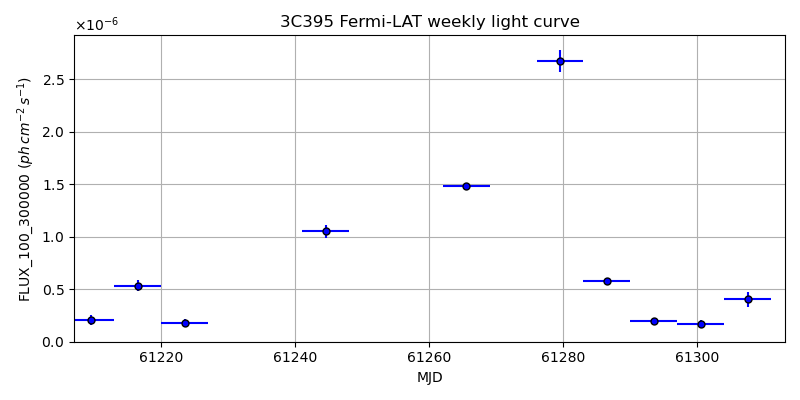
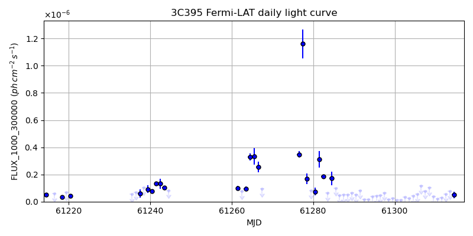
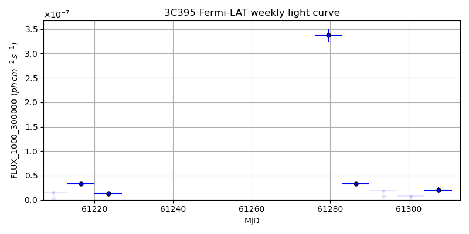

LAT Lightcurve site: https://fermi.gsfc.nasa.gov/ssc/data/access/lat/msl_lc/source/3C_395
NED: Query
Time of last update of this page: UT: 2026-10-02 15:26 (MJD: 61315.643)
| Property | Value |
|---|---|
| R.A. | 19:02:23.28 |
| Dec. | 32:00:00.0 |
| z | 0.635 |
| 3FGL SpectrumType | |
| 3FGL PL Index | -1.00 |
| 3FGL Flux_100_300000 | -1.00e+00 |
| 3FGL Flux_1000_300000 | -1.00e+00 |
| 3FGL Flux >200 GeV | -1.00e+00 |
| 3FGL Extrap. Crab >200 GeV | -1.00 |
| 3FGL Flux After EBL Absorption >200GeV | -1.00e+00 |
| 3FGL EBL Crab Fraction >200GeV | -1.00 |

| MJD | dMJD | Flux | dFlux | Frac3FGL | FracCrab>200GeV | EBLFracCrab>200GeV |
|---|---|---|---|---|---|---|
| 61310.50 | 0.50 | 9.94e-07 | 0.00e+00 | 0.00 | 0.00 | -0.00 |
| 61311.50 | 0.50 | 7.07e-07 | 0.00e+00 | 0.00 | 0.00 | -0.00 |
| 61312.50 | 0.50 | 3.14e-07 | 0.00e+00 | 0.00 | 0.00 | -0.00 |
| 61313.50 | 0.50 | 7.11e-07 | 0.00e+00 | 0.00 | 0.00 | -0.00 |
| 61314.50 | 0.50 | 4.32e-07 | 0.00e+00 | 0.00 | 0.00 | -0.00 |

| MJD | dMJD | Flux | dFlux | Frac3FGL | FracCrab>200GeV | EBLFracCrab>200GeV |
|---|---|---|---|---|---|---|
| 61279.50 | 3.50 | 2.68e-06 | 0.00e+00 | 0.00 | 0.00 | -0.00 |
| 61286.50 | 3.50 | 5.83e-07 | 0.00e+00 | 0.00 | 0.00 | -0.00 |
| 61293.50 | 3.50 | 1.96e-07 | 0.00e+00 | 0.00 | 0.00 | -0.00 |
| 61300.50 | 3.50 | 1.68e-07 | 0.00e+00 | 0.00 | 0.00 | -0.00 |
| 61307.50 | 3.50 | 4.03e-07 | 0.00e+00 | 0.00 | 0.00 | -0.00 |

| MJD | dMJD | Flux | dFlux | Frac3FGL | FracCrab>200GeV | EBLFracCrab>200GeV |
|---|---|---|---|---|---|---|
| 61310.50 | 0.50 | 1.95e-08 | 0.00e+00 | 0.00 | 0.00 | -0.00 |
| 61311.50 | 0.50 | 2.96e-08 | 0.00e+00 | 0.00 | 0.00 | -0.00 |
| 61312.50 | 0.50 | 5.69e-08 | 0.00e+00 | 0.00 | 0.00 | -0.00 |
| 61313.50 | 0.50 | 7.66e-08 | 0.00e+00 | 0.00 | 0.00 | -0.00 |
| 61314.50 | 0.50 | 5.04e-08 | 0.00e+00 | 0.00 | 0.00 | -0.00 |

| MJD | dMJD | Flux | dFlux | Frac3FGL | FracCrab>200GeV | EBLFracCrab>200GeV |
|---|---|---|---|---|---|---|
| 61279.50 | 3.50 | 3.37e-07 | 0.00e+00 | 0.00 | 0.00 | -0.00 |
| 61286.50 | 3.50 | 3.33e-08 | 0.00e+00 | 0.00 | 0.00 | -0.00 |
| 61293.50 | 3.50 | 1.91e-08 | 0.00e+00 | 0.00 | 0.00 | -0.00 |
| 61300.50 | 3.50 | 7.97e-09 | 0.00e+00 | 0.00 | 0.00 | -0.00 |
| 61307.50 | 3.50 | 1.95e-08 | 0.00e+00 | 0.00 | 0.00 | -0.00 |
--------------------------------------------------------- Using user-supplied coords: 19:02:23.28 32:00:00.0 2000 --------------------------------------------------------- FLWO UT night of: 2026-10-03 Local Sid. @ Midnight: 00:24 Sunset (-15.0) (local, UT): 19:14 02:14 Sunrise (-15.0) (local, UT): 05:12 12:12 Moonrise (local, UT): 22:48 05:48 Moonset (local, UT): Moon phase: 0.53 --------------------------------------------------------- AzTime LSID UT Obj_el Obj_az Mn_el Mn_az Sep. --------------------------------------------------------- 19:14 19:37 02:14 82.8 275.2 -28.5 20.1 120.2 19:44 20:07 02:44 76.4 275.8 -26.2 26.7 120.2 20:14 20:37 03:14 70.1 277.3 -23.2 32.8 120.3 20:44 21:07 03:44 63.7 279.1 -19.6 38.5 120.4 21:14 21:37 04:14 57.4 281.1 -15.7 43.6 120.4 21:44 22:07 04:44 51.2 283.2 -11.3 48.4 120.5 22:14 22:37 05:14 45.0 285.4 -6.5 52.7 120.5 22:44 23:07 05:44 38.9 287.7 -0.8 56.7 120.6 23:14 23:37 06:14 32.8 290.1 3.8 60.4 120.6 23:44 00:07 06:44 26.9 292.7 9.1 63.9 120.6 00:14 00:38 07:14 21.0 295.5 14.6 67.1 120.6 00:44 01:08 07:44 15.3 298.5 20.3 70.2 120.6 01:14 01:38 08:14 9.8 301.8 26.1 73.1 120.7 01:44 02:08 08:44 4.6 305.3 32.1 76.0 120.7 02:14 02:38 09:14 -0.1 309.1 38.1 78.8 120.7 02:44 03:08 09:44 -5.2 313.3 44.2 81.7 120.7 03:14 03:38 10:14 -10.0 317.9 50.3 84.8 120.7 03:44 04:08 10:44 -14.1 322.9 56.5 88.1 120.8 04:14 04:38 11:14 -17.7 328.3 62.7 91.9 120.8 04:44 05:08 11:44 -20.8 334.2 68.9 96.9 120.8 05:12 05:37 12:12 -23.1 340.3 74.7 103.8 120.9 --------------------------------------------------------- Dark hours >55 deg.: 2.20 srcstart (UT): 2026-10-03 02:13 srcend (UT): 2026-10-03 04:25